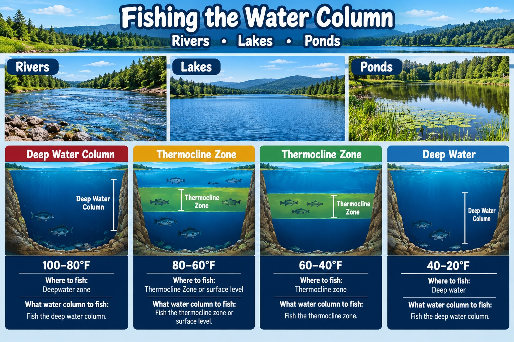

What are water columns
Now, in my earlier passage, I explained that the goal of this page is to find fish in the water column. But what is a water column? Well, a water column is a vertical layer of water with varying amounts of light and temperature, and for fishing, this really matters, as fish, depending on the time of year, will be in different parts of the water column, and if you are fishing in a different water column than them at that time; you are not going to catch fish. To see more on this specific topic and what lures work best in each season. Please go to best lures to catch fish and this is a fundamental part of fishing, as without this knowledge, you will be unable to catch fish
